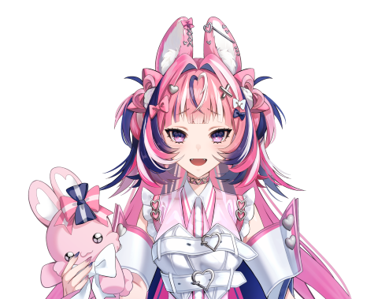

百彩 イト
momoiro ito
🐇 百の彩を持つウサギのキメラ
個性豊かで魅力的なChimelab所属ライバーたち
所属ライバーは皆なにかの「キメラ」。ふつうの人間ではありません。
魔物から獣人、天使や悪魔など…ここにはたくさんのキメラが収容されています。
そんなキメラ達を観察・研究している施設です。自由気ままに研究所で生活するキメラ達の日常を配信という形でお届けします。
イラストレーター・Live2Dモデラーが運営。技術的なサポートも万全。
初心者でも安心のノウハウ・サポート体制を完備。
心を燃やせるあなたを全力でサポート。配信未経験でも大歓迎！
連絡方法にDiscordを採用。早急に対応します。
あなたの魅力、個性を研究し輝ける場所を目指しています
IRIAMのみ
ギフト報酬 & 時給ダイヤ
※事務所ではなくIRIAM側の相対評価なので前後します。
各ランクに応じた時給ダイヤを支給
1ダイヤ＝1円
初月のみノルマあり
初配信から30日以内に：
ノルマ達成で立ち絵無償＆ミニキャライラストプレゼント！
応募フォームから応募
Discordで音声面談
採用決定・契約
立ち絵制作・配信準備期間へ
IRIAM配信デビュー！
お試し応募も大歓迎です！
歌が好き、人と話すのが好き、配信をしてみたい…
どれか一つでも当てはまる方、生まれ変わってみませんか？
応募に関する注意事項
お問い合わせは公式X（旧Twitter）のDMへ